CS 463G & CS 663
(Intro to) AI
Lecture 5: BFS and DFS
Fall 2026
Uninformed Search
Uninformed search uses the problem definition but no estimate of distance to the goal.
- It knows the initial state, actions, transitions, and goal test.
- It may also know step costs, but it has no heuristic.
- The search rule chooses which frontier node to expand next.
BFS and DFS differ mainly in how they remove nodes from the frontier.
Queue or Stack?
The frontier stores discovered nodes that still await expansion.
BFS queue
Remove from the front. Add at the back.
First in, first out.
DFS stack
Remove and add at the top.
Last in, first out.
Which rule preserves a layer-by-layer expansion order?
Breadth-First Search
- BFS expands every node at depth d before any node at depth d+1.
- The frontier is a queue.
- With equal step costs, BFS returns a solution with the fewest actions.
Think of the frontier as a wave spreading outward one layer at a time.
The BFS Frontier
Remove from the front of the queue. Add children at the back, left to right.


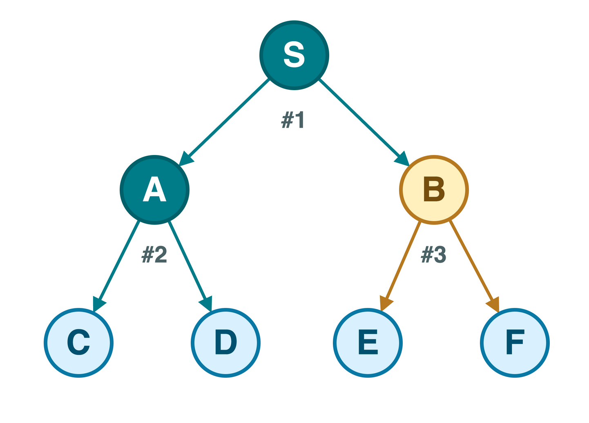
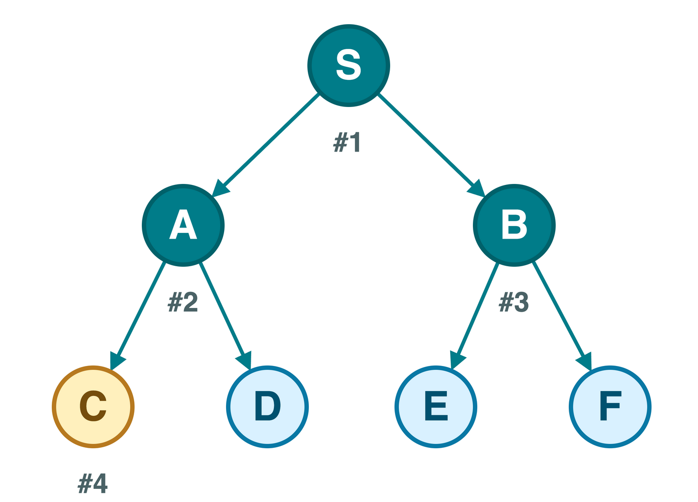
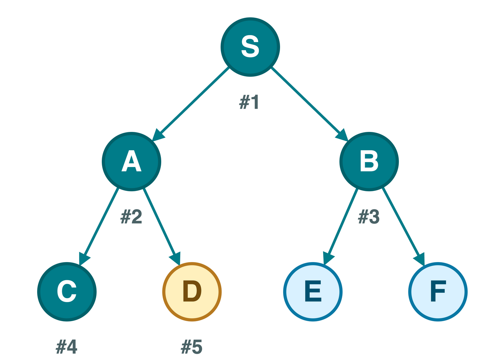
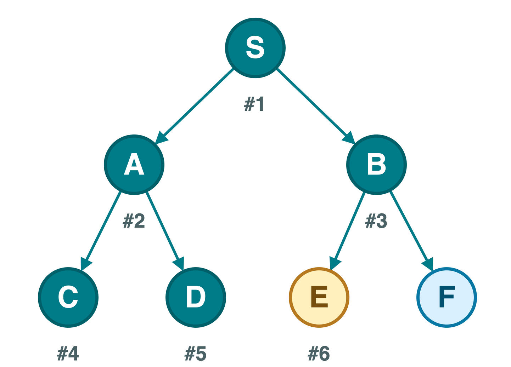
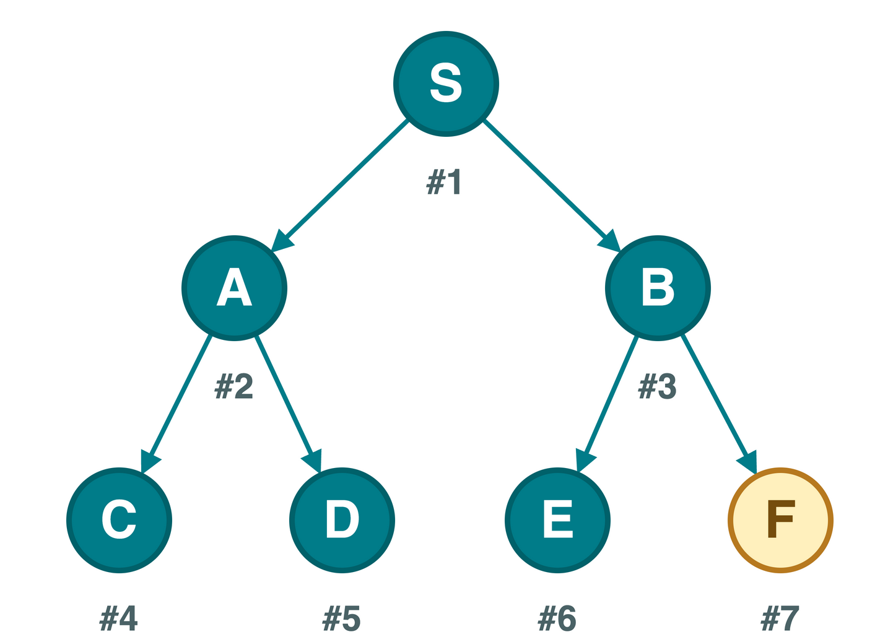
Numbers show expansion order.
Queue: front on the left
| Remove | Add | Queue afterward |
|---|---|---|
| Start | S | [S] |
| S | A, B | [A, B] |
| A | C, D | [B, C, D] |
| B | E, F | [C, D, E, F] |
| C | – | [D, E, F] |
| D | – | [E, F] |
| E | – | [F] |
| F | – | [] |
Every depth-1 node waits ahead of every depth-2 node.
Breadth-First Search Pseudocode
Record Reached States on Insertion
Suppose S connects to A and B, and both A and B connect to C.
| Policy | Result |
|---|---|
| Record C when adding it | C enters the frontier once |
| Wait until removing C | Both A and B may add C |
Repeated entries waste memory and can multiply rapidly in a graph with many converging paths.
For BFS and DFS graph search, record a new state when it enters the frontier.
BFS Guarantees and Cost
| Question | BFS answer |
|---|---|
| Complete? | Yes on a finite graph; also with finite branching and a finite-depth goal |
| Fewest actions? | Yes when every step has equal cost |
| Graph traversal time | O(V+E) with adjacency lists |
| Graph traversal storage | O(V) for frontier, reached states, and parents |
| Search-tree growth | A layer can contain about b^d nodes |
BFS obtains a shortest-action guarantee by retaining a potentially wide frontier.
Depth-First Search
- DFS follows one branch until it reaches a goal or a dead end.
- The frontier is a stack or the language’s call stack.
- Backtracking resumes the most recent unfinished branch.
- DFS does not generally return a shortest path.
Think of following one corridor, then returning to the last junction.
DFS Expansion Order
Remove from the top of the stack. Push right children first so left children come out first.
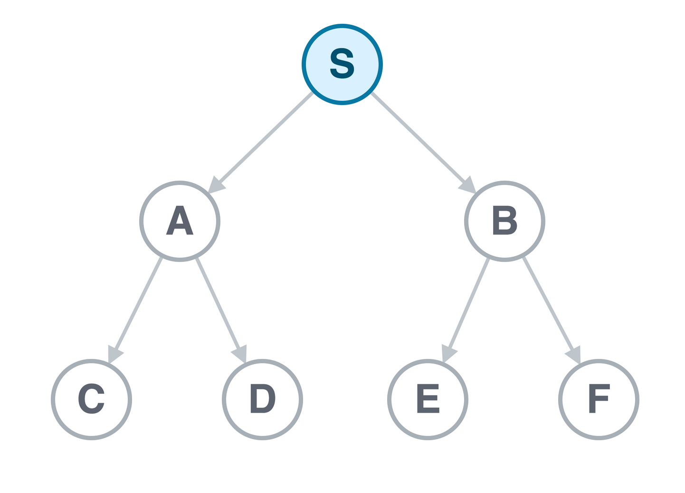
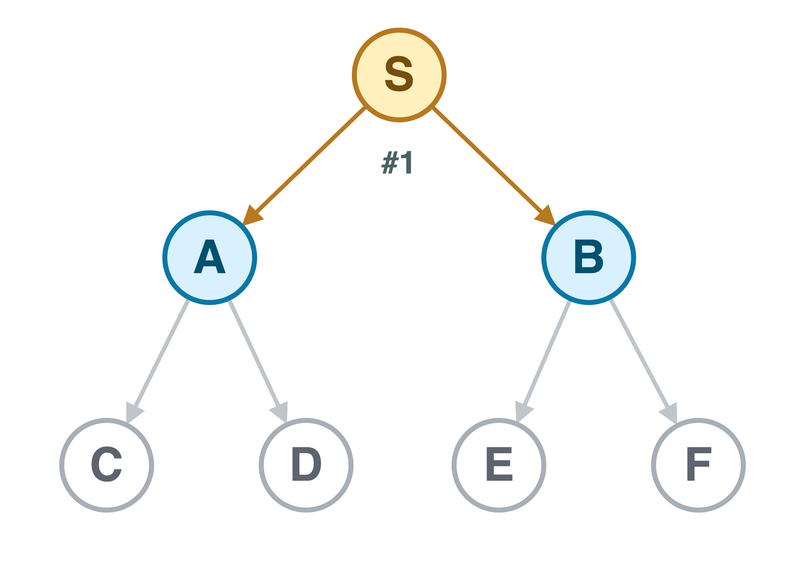
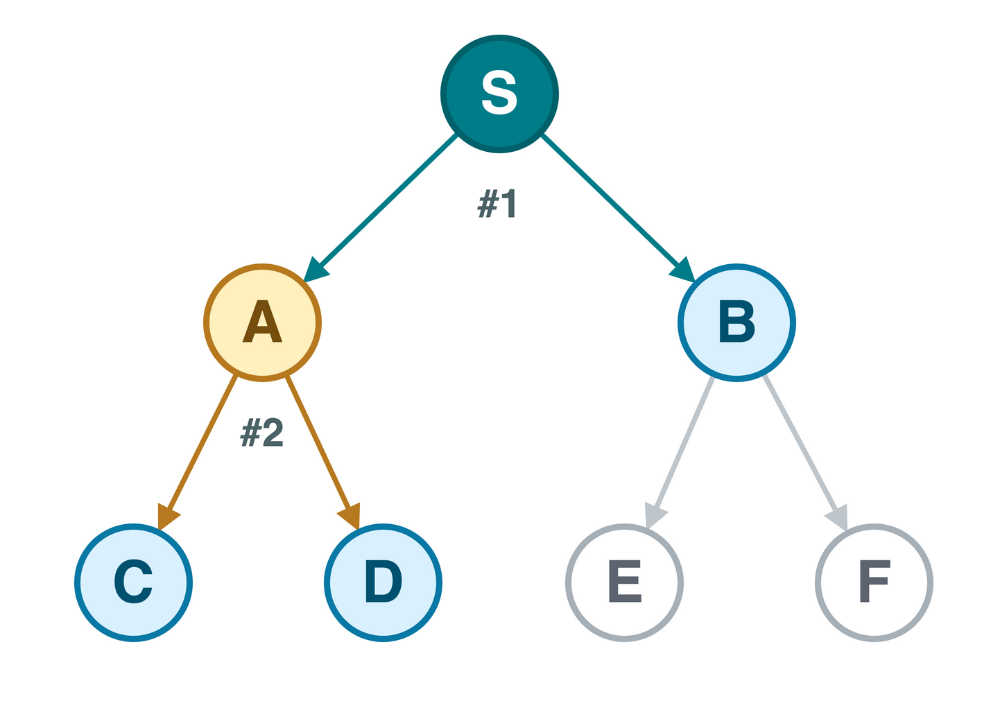
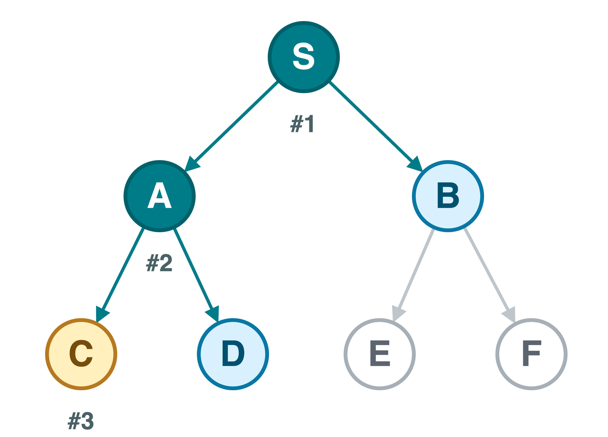
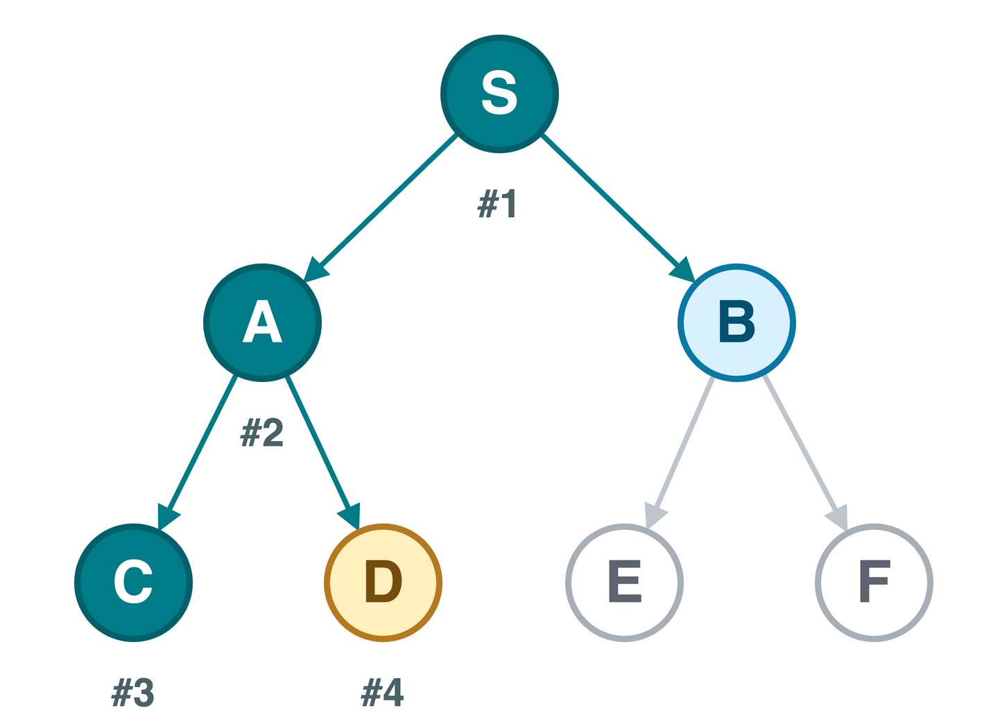
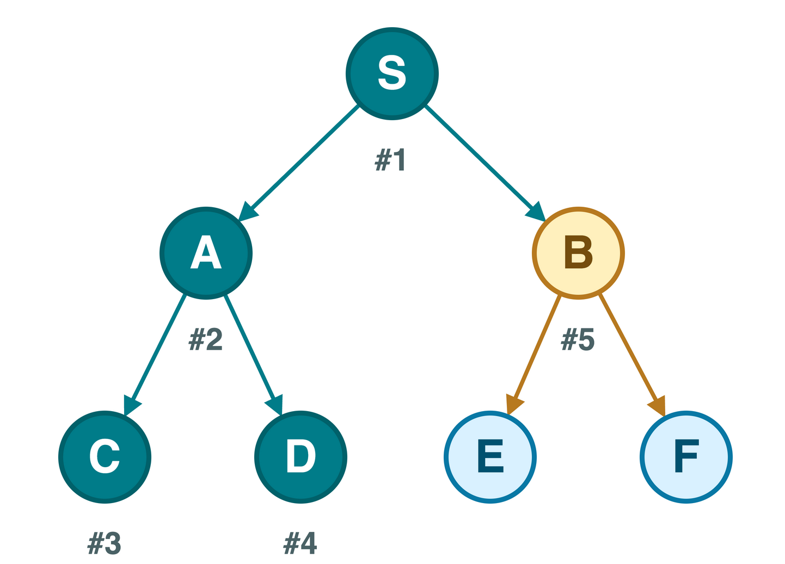
Numbers show expansion order.
Stack: top on the right
| Remove | Push | Stack afterward |
|---|---|---|
| Start | S | [S] |
| S | B, A | [B, A] |
| A | D, C | [B, D, C] |
| C | – | [B, D] |
| D | – | [B] |
| B | F, E | [F, E] |
| E | – | [F] |
| F | – | [] |
DFS finishes A’s branch before returning to B.
Recursive DFS Pseudocode
The active function calls remember the current branch.
Iterative DFS Pseudocode
DFS Guarantees and Cost
| Question | DFS answer |
|---|---|
| Complete on a finite graph? | Yes with a reached set |
| Infinite-depth tree? | It can follow one branch forever |
| Shortest path? | No general guarantee |
| Graph traversal time | O(V+E) with adjacency lists |
| Graph traversal storage | O(V) when all reached states are retained |
For tree search with branching factor b and maximum depth m, work can grow as O(b^m).
DFS may keep a narrow frontier, but graph search still stores reached states.
Neighbor Order Matters
Suppose S has two branches that both reach G.
| First branch considered | Route found first | Edges |
|---|---|---|
| A before B | S, A, C, D, G | 4 |
| B before A | S, B, G | 2 |
- DFS can return either route depending on neighbor order.
- BFS still returns a two-edge route because it explores by depth.
- If several shortest routes exist, BFS’s tie-breaking also follows neighbor order.
When should an implementation sort neighbors rather than trust their stored order?
BFS and DFS Compared
| Property | BFS | DFS |
|---|---|---|
| Frontier | Queue | Stack or recursion |
| Expansion pattern | Layer by layer | One branch first |
| Fewest actions | Yes with equal step costs | Not guaranteed |
| Main memory pressure | Wide frontier | Reached set and deep pending paths |
| Useful when | A shallow or shortest solution matters | Any solution or exhaustive traversal is enough |
A small frontier change produces different search order, memory use, and solution quality.
Which Search Would You Choose?
| Task | Starting point |
|---|---|
| Fewest moves through an unweighted maze | BFS |
| Determine whether any vertex is reachable | Either BFS or DFS |
| Explore a deep decision tree with tight memory | DFS, with depth and cycle safeguards |
| Find the cheapest route with unequal costs | Neither; use Uniform-Cost Search |
A social-network query asks for a person within two friendship links. Which frontier rule fits the depth limit?
BFS naturally completes distance 1 before exploring distance 2.
Homework 1 Connection
For a keys-and-doors search problem:
- The state needs the current location and the keys already collected.
- One location with different key sets can represent different states.
- If every move has equal cost, BFS provides a shortest-move baseline.
- Parent links can reconstruct the moves after reaching the goal.
Why would a reached set containing only locations discard valid solutions?
Takeaways
- BFS uses a queue and finds a fewest-action path when step costs are equal.
- DFS uses a stack or recursion and explores one branch at a time.
- Record new states when adding them to the frontier.
- Store parent links when the search must return a path.
- Neighbor order strongly affects DFS traversal.
Use the notebook’s explanation blocks to connect these ideas to the grid-world implementation.